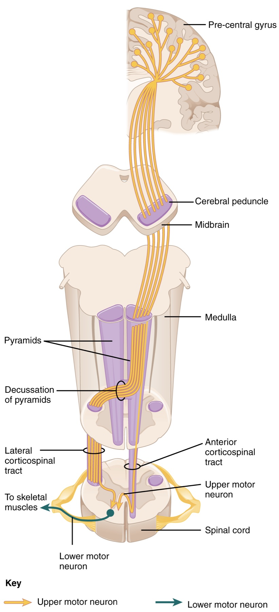

Espástica = 1º NMS — e o nome da doença
Fraqueza espástica + tremor + visão + sensitivo — onde vive a lesão e por que o nome da doença ajuda?
Fraqueza primeiro
O raciocínio começa pela fraqueza, porque o caso é situação neurológica vivida com paresia. A pergunta topográfica: primeiro neurônio, segundo neurônio, placa ou músculo?
Espástica = 1º NMS = SNC
O dado que entrega a topografia: a fraqueza é espástica → problema no primeiro neurônio motor. É doença neurológica pura (só manifestações neurológicas — não um quadro sistêmico tipo dermatomiosite). O primeiro neurônio motor vive no sistema nervoso central. SNC = estruturas completamente cercadas pela meninge: cérebro, cerebelo, tronco encefálico e medula espinhal. SNP = raízes, nervos periféricos e plexos. Doença puramente neurológica que pega o primeiro neurônio = doença dentro do SNC.
Mais que um sítio
Além do 1º neurônio, o quadro inclui: cerebelo (tremor), nervo óptico (↓visão) e sensibilidade alterada. Essas informações compõem o diagnóstico: não é uma topografia isolada.
Nome e a regra de prova
Diagnóstico de moça jovem com múltiplas lesões no SNC (1º NMS + visão + cerebelo + sensitivo): esclerose múltipla. O nome ajuda: esclerose múltipla = doença neurológica central com múltiplas apresentações.
Regra de ouro de prova
Mulher jovem na prova perdendo visão = parar tudo e afastar esclerose múltipla até prova em contrário.
Por que importa: topografar “espástica = 1º” sem juntar os outros sítios deixa o diagnóstico pela metade. Resumo operacional: espástica → 1º NMS → SNC + outros sítios = EM; mulher jovem + visão = EM até provar o contrário.

OpenStax College, Anatomy & Physiology · CC BY 3.0 · fonte

Onde vive o 1º
O trato corticoespinhal é o caminho do 1º neurônio motor — todo ele dentro do SNC. Espástica aponta para aqui, não para raiz/nervo/plexo do SNP.
Agora formalizar o que a EM é — imunomediada, desmielinizante, só SNC.
Quiz
Q1. Fraqueza espástica aponta prioritariamente para:
Gabarito: C. Espasticidade é a assinatura do 1º NMS — e o 1º vive no SNC.
(A)(B) não dão espasticidade piramidal clássica como eixo. (D) 2º tende a flácido/hiporreflexo/atrofia.
Por que se cai na D: confundir “nervo” com qualquer fraqueza.
Q2. Mulher jovem com perda de visão na prova deve:
Gabarito: B. A regra é de suspensão diagnóstica ativa, não de etiqueta automática.
(A) pode coexistir com DDx, mas não encerra. (C) perfil demográfico/sindrômico errado. (D) outro perfil etário.
Por que se cai na A: aura “explica” visão e o raciocínio para cedo.